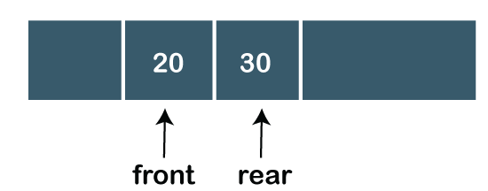

Queue
A Queue is a linear structure which follows a particular order in which the operations are performed. The order is First In First Out (FIFO). A good example of a queue is any queue of consumers for a resource where the consumer that came first is served first. The difference between stacks and queues is in removing. In a stack we remove the item the most recently added; in a queue, we remove the item the least recently added.

Operations on Queue
There are two fundamental operations performed on a Queue:- Enqueue: The enqueue operation is used to insert the element at the rear end of the queue. It returns void.
- Dequeue: The dequeue operation performs the deletion from the front-end of the queue. It also returns the element which has been removed from the front-end. It returns an integer value. The dequeue operation can also be designed to void.
- Peek: This is the third operation that returns the element, which is pointed by the front pointer in the queue but does not delete it.
- Queue overflow (isfull): When the Queue is completely full, then it shows the overflow condition.
- Queue underflow (isempty): When the Queue is empty, i.e., no elements are in the Queue then it throws the underflow condition.
Types of Queue
There are four types of Queues:
-
Linear Queue:
In Linear Queue, an insertion takes place from one end while the deletion occurs from another end. The end at which the insertion takes place is known as the rear end, and the end at which the deletion takes place is known as front end. It strictly follows the FIFO rule. The linear Queue can be represented, as shown in the below figure:
In the above figure, we can observe that the front pointer points to the next element, and the element which was previously pointed by the front pointer was deleted.
The major drawback of using a linear Queue is that insertion is done only from the rear end. If the first three elements are deleted from the Queue, we cannot insert more elements even though the space is available in a Linear Queue. In this case, the linear Queue shows the overflow condition as the rear is pointing to the last element of the Queue. -
Circular Queue:
In Circular Queue, all the nodes are represented as circular. It is similar to the linear Queue except that the last element of the queue is connected to the first element. It is also known as Ring Buffer as all the ends are connected to another end. The circular queue can be represented as:

The drawback that occurs in a linear queue is overcome by using the circular queue. If the empty space is available in a circular queue, the new element can be added in an empty space by simply incrementing the value of rear.
To know more about circular queue:Click Here -
Priority Queue:
A priority queue is another special type of Queue data structure in which each element has some priority associated with it. Based on the priority of the element, the elements are arranged in a priority queue. If the elements occur with the same priority, then they are served according to the FIFO principle. In priority Queue, the insertion takes place based on the arrival while the deletion occurs based on the priority. The priority Queue can be shown as:
To know more about priority queue:Click Here
The above figure shows that the highest priority element comes first and the elements of the same priority are arranged based on FIFO structure. -
Deque: Both the Linear Queue and Deque are different as the linear queue follows the FIFO principle whereas, deque does not follow the FIFO principle. In Deque, the insertion and deletion can occur from both ends.
To know more about Deque:Click Here
Array Implementation Of Queue
We can easily represent queue by using linear arrays. There are two variables i.e. front and rear, that are implemented in the case of every queue. Front and rear variables point to the position from where insertions and deletions are performed in a queue. Initially, the value of front and queue is -1 which represents an empty queue. Array representation of a queue containing 5 elements along with the respective values of front and rear, is shown in the following figure.

Insert any element in a queue
ALGORITHM
-
Step 1:
IF REAR = MAX - 1
Write OVERFLOW
Go to step
[END OF IF] -
Step 2:
IF FRONT = -1 and REAR = -1
SET FRONT = REAR = 0
ELSE
SET REAR = REAR + 1
[END OF IF] -
Step 3:
Set QUEUE[REAR] = NUM
-
Step 4:
EXIT
Delete an element from the queue
ALGORITHM
-
Step 1:
IF FRONT = -1 or FRONT > REAR
Write UNDERFLOW
ELSE
SET VAL = QUEUE[FRONT]
SET FRONT = FRONT + 1
[END OF IF] -
Step 2:
EXIT
Drawbacks of Array Implementatin
Although, the technique of creating a queue is easy, but there are some drawbacks of using this technique to implement a queue.
- Memory wastage : The space of the array, which is used to store queue elements, can never be reused to store the elements of that queue because the elements can only be inserted at front end and the value of front might be so high so that, all the space before that, can never be filled.
-
Deciding the array size:
On of the most common problem with array implementation is the size of the array which requires to be declared in advance. Due to the fact that, the queue can be extended at runtime depending upon the problem, the extension in the array size is a time taking process and almost impossible to be performed at runtime since a lot of reallocations take place. Due to this reason, we can declare the array large enough so that we can store queue elements as enough as possible but the main problem with this declaration is that, most of the array slots (nearly half) can never be reused. It will again lead to memory wastage.
Linked List Implementation Of Queue
The storage requirement of linked representation of a queue with n elements is o(n) while the time requirement for operations is o(1).
In a linked queue, each node of the queue consists of two parts i.e. data part and the link part. Each element of the queue points to its immediate next element in the memory.
In the linked queue, there are two pointers maintained in the memory i.e. front pointer and rear pointer. The front pointer contains the address of the starting element of the queue while the rear pointer contains the address of the last element of the queue.

Insert Operation
ALGORITHM
-
Step 1:
Allocate the space for the new node PTR
-
Step 2:
SET PTR -> DATA = VAL
-
Step 3:
IF FRONT = NULL
SET FRONT = REAR = PTR
SET FRONT -> NEXT = REAR -> NEXT = NULL
ELSE
SET REAR -> NEXT = PTR
SET REAR = PTR
SET REAR -> NEXT = NULL
[END OF IF] -
Step 4:
END
Deletion
Deletion operation removes the element that is first inserted among all the queue elements. Firstly, we need to check either the list is empty or not. The condition front == NULL becomes true if the list is empty, in this case , we simply write underflow on the console and make exit.
Otherwise, we will delete the element that is pointed by the pointer front. For this purpose, copy the node pointed by the front pointer into the pointer ptr. Now, shift the front pointer, point to its next node and free the node pointed by the node ptr. This is done by using the following statements.
ALGORITHM
-
Step 1:
IF FRONT = NULL
Write " Underflow "
Go to Step 5
[END OF IF] -
Step 2:
SET PTR = FRONT
-
Step 3:
SET FRONT = FRONT -> NEXT
-
Step 4:
FREE PTR
-
Step 5:
END
Practice Problems On Queues
- Check if a queue can be sorted into another queue using a stack
- Program for Page Replacement Algorithms | Set 2 (FIFO)
- Sliding Window Maximum (Maximum of all subarrays of size k)
- Find the largest multiple of 3 | Set 1 (Using Queue)
- An Interesting Method to Generate Binary Numbers from 1 to n
- Sum of minimum and maximum elements of all subarrays of size k.
- First negative integer in every window of size k
- Minimum time required to rot all oranges
- Queue based approach for first non-repeating character in a stream
- Reversing the first K elements of a Queue